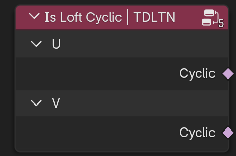

Reference
Nodes
Write
Set Loft Group | TDLTN
Set Group ID value on curves to loft each Group separately.
Sockets:
Curve (Output Geometry)
Curve (Input Geometry)
Selection (Input Bool)
Group ID (Input Int) - Split Curves into groups, which can be lofted separately. By default loft all curves.
Set Loft Cyclic | TDLTN
Set whether the loft is cyclic along the chosen axis (U or V). Useful for connecting ends of lofts into loops or tubes.
Sockets:
Curve (Output Geometry)
Curve (Input Geometry)
Axis (Input Menu) - Choose the direction to apply cyclic behavior.
Selection (Input Bool)
Cyclic (Input Bool) - Enables or disables cyclic behavior along the selected axis for the selected loft groups.
Set Loft Spline Type | TDLTN
Set spline type of loft curves, generated in Loft Curves node.
Sockets:
Curve (Output Geometry)
Curve (Input Geometry)
Type (Input Menu) - The curve type to change the selected curves to.
Selection (Input Bool)
Bezier
Set Loft Handle Type | TDLTN
Set the handle type for the control points of a loft Bézier curve.
Sockets:
Curve (Output Geometry)
Curve (Input Geometry)
Mode (Input Menu) - Whether to update left and right handles.
Handle Type (Input Menu)
Selection (Input Bool)
Set Loft Handle Position | TDLTN
Set the positions for the handles of loft Bézier curves.
Sockets:
Curve (Output Geometry)
Curve (Input Geometry)
Mode (Input Menu) - Whether to update left and right handles.
Selection (Input Bool)
Position (Input Vector)
Offset (Input Vector)
NURBS
Set NURBS Weight | TDLTN
Sets the weight of control points in a loft NURBS curve, influencing how strongly each point pulls the curve toward itself. Higher weights make the curve pass closer to the control point.
Sockets:
Curve (Output Geometry)
Curve (Input Geometry)
Axis (Input Menu) - Choose direction of loft curves.
Selection (Input Bool)
Weight (Input Float) - Value controlling the influence of each control point. A weight of 1.0 is standard; higher values increase pull, lower values reduce it.
Set NURBS Knots | TDLTN
Assigns a custom knot vector to a NURBS curve. Knot values determine how control points influence the curve’s shape and parameterization.
Sockets:
Curve (Output Geometry)
Curve (Input Geometry)
Axis (Input Menu) - Choose direction of loft curves.
Selection (Input Bool)
Bézier (Input Bool) - Make this nurbs curve or surface act like a Bézier spline in the UV direction.
Endpoint (Input Bool) - Make this NURBS curve or surface meet the endpoints in the UV direction.
Set NURBS Order | TDLTN
Sets the mathematical order of the NURBS curve, which defines how many control points influence each segment. Higher orders produce smoother curves but require more control points.
Sockets:
Curve (Output Geometry)
Curve (Input Geometry)
Axis (Input Menu) - Choose direction of loft curves.
Selection (Input Bool)
Order (Input Int) - NURBS order in the UV direction. Higher values make each point influence a greater area, but have worse performance.
Read
Loft Parameter | TDLTN
Retrieve how far along each loft axis a control point is.
Sockets:
U:
Factor (Output Float) - The portion of the loft’s U axis total length at the control point.
Length (Output Float) - Distance of control points along the loft U axis.
Index (Output Int) - Each control point’s index on loft U axis.
V:
Factor (Output Float) - The portion of the loft’s V axis total length at the control point.
Length (Output Float) - Distance of control points along the loft V axis.
Index (Output Int) - Each control point’s index on loft V axis.
Loft UV Parameter | TDLTN
Retrieve how far along each loft surface corner a control point is.
Sockets:
U:
Factor (Output Float) - The portion of the loft’s V axis total length at the loop.
Length (Output Float) - Distance of loops along the loft V axis.
Index (Output Int) - Each loop index on loft V axis.
V:
Factor (Output Float) - The portion of the loft’s V axis total length at the loop.
Length (Output Float) - Distance of loops along the loft V axis.
Index (Output Int) - Each loop index on loft V axis.
Is Loft Cyclic | TDLTN
Retrieve whether each loft loop connects back to its starting profile, forming a closed surface.
Sockets:
U:
Cyclic (Output Bool)
V:
Cyclic (Output Bool)
Loft Length | TDLTN
Retrieve the total length and number of points along the U and V directions of the lofted surface.
Sockets:
U:
Length (Output Float)
Point Count (Output Int)
V:
Length (Output Float)
Point Count (Output Int)
Loft Group ID | TDLTN
Sockets:
Group ID (Output Int)
Map ID (Input Bool) - Sort all IDs into a list starting from 0.
Loft Normal | TDLTN
Retrieve a unit length vector indicating the direction pointing away from the geometry at each element.
Sockets:
Normal (Output Vector)
Loft Tangent | TDLTN
Retrieve the direction of axis at each control point.

Sockets:
U:
Tangent (Output Vector)
V:
Tangent (Output Vector)
Loft Info | TDLTN
Sockets:
Is Surface (Output Bool)
Is Curve (Output Bool)
Loft Axis (Output Int)
Loft Endpoint Selection | TDLTN
Provide a selection for an arbitrary number of endpoints in each loft group axis.
Sockets:
U:
Selection (Output Bool) - The selection from the start and end of the U axis based on the input sizes.
Start Size (Input Int) - The amount of points to select from the start of loft group U axis.
End Size (Input Int) - The amount of points to select from the end of loft group U axis.
V:
Selection (Output Bool) - The selection from the start and end of the V axis based on the input sizes.
Start Size (Input Int) - The amount of points to select from the start of loft group V axis.
End Size (Input Int) - The amount of points to select from the end of loft group V axis.
Loft Handle Positions | TDLTN
Retrieve the position of each V Loft Bézier control point’s handles.
Sockets:
Left (Output Vector)
Right (Output Vector)
Relative (Input Bool) - Output the handle positions relative to the corresponding control point instead of in the local space of the geometry.
Operations
Mesh to Loft Curves | TDLTN
Convert mesh edges to loft curves. Store basic set of required attributes.
Sockets:
Curves (Output Geometry)
Geometry (Input Geometry)
Edge Input (Input Menu)
Edges (Input Geometry)
Edges (Input Object)
Edges (Input Collection)
Curve Type (Input Menu) - The curve to change the selected curves to.
U Cyclic (Input Bool) - Make selected group of curves a closed loop in the U direction.
V Cyclic (Input Bool) - Make selected group of curves a closed loop in the V direction.
Selection (Input Bool)
Bézier:
Bézier Handle Type (Input Menu)
NURBS:
NURBS Bézier (Input Bool) - Make this nurbs curve or surface act like a Bézier spline in the U direction.
NURBS Endpoint (Input Bool) - Make this NURBS curve or surface meet the endpoints in the U direction.
Order (Input Int)
Loft Curves | TDLTN
Sample points along the input splines and connecting them in a specified order to generate a smooth mesh surface.
Sockets:
Geometry (Output Geometry)
UV Map (Output Vector)
Curves (Input Geometry)
Grouping:
Group ID (Output Int)
Group ID (Input Int) - Split Curves into groups, which can be lofted separately. By default loft all curves.
Resample Group (Input Menu) - How to resample all curves in a Loft group.
U Curves:
U Curves (Output Geometry)
Resample Type (Input Menu) - How to specify the amount of samples.
Method (Input Menu) - How to generate poly spline.
Count (Input Int)
Length (Input Float)
Even Topology (Input Float) - Distribute the control points of the resampled U curve evenly.
V Curves:
V Curves (Output Geometry)
Resample Type (Input Menu) - How to specify the amount of samples.
Method (Input Menu) - How to generate poly spline.
Count (Input Int)
Length (Input Float)
Even Topology (Input Float) - Distribute the control points of the resampled V curve evenly.
Interpolation (Input Menu) - Choose how to interpolate V-axis curves Bézier handles, NURBS weight. Parameters are stored on U-axis curves and have linear interpolation by default.
Fill Loft Caps | TDLTN
Fill the First or Last profiles of a loft surface, closing the open loft surface or cross-section.
Sockets:
Geometry (Output Geometry)
Filled Caps (Output Bool)
Geometry (Input Geometry)
Filling Method (Input Menu) - Determines how the caps are constructed.
Cuts (Input Int) - Divide the fill mesh into a specified number of segments.
Smooth (Input Int) - How many times to blur mesh filling.
Fill First (Input Bool) - Enable filling at the start of the loft (first U profile).
Flip First (Input Bool) - Reverses normal direction of the first cap.
Fill Last (Input Bool) - Enable filling at the end of the loft (last U profile).
Flip Last (Input Bool) - Reverse normal direction of the last cap.
Material offset (Input Int)
Merge by Distance:
Merge by Distance (Input Bool)
Merge by Distance (Input Menu)
Distance (Input Float) - Threshold distance used for merging points.
Transfer Data from Loft Curves | TDLTN
Transfer attribute or field from Loft Curves to the generated loft surface on point domain.
Sockets:
Geometry (Output Geometry)
Geometry (Input Geometry)
Loft Curves Input (Input Menu)
Loft Curves (Input Geometry) - U or V Curves used in the lofting process. Must match the geometry generated by the Loft Curves node.
Loft Curves (Input Object)
Loft Curves (Input Collection)
Sample Method (Input Menu)
Loft Axis (Input Menu) - Select which axis to sample from. Some attributes can only be accessed from a specific axis.
Attribute Type (Input Menu) - Specify whether to use the attribute by name or plug it manually.
Data Type (Input Menu) - Define the type of attribute to sample from the Loft Curves. Must match the type of the source attribute name.
Attribute (Input String) - Name of the attribute to transfer from the Loft Curves. This attribute must exist on the source curves.
Store Attribute (Input String) - Name of an custom attribute to store on Surface.
Value (Input Float)
Value (Input Int)
Value (Input Vector)
Value (Input Color)
Value (Input Bool)
Value (Input Rotation)
Value (Input Matrix)
Sample Position (Input Vector)
Blur:
Iterations (Input Int) - Number of blur passes to apply on the transferred attribute. Helps smooth sharp transitions between curves or groups.
Lock Boundaries (Input Bool) - Prevents blurring across the outermost edge curves. Useful for preserving crisp edges on open loft surfaces.
Transfer Data from Loft Surface | TDLTN
Transfer attribute or field from Loft Surface to nearest geometry.
Sockets:
Geometry (Output Geometry)
Geometry (Input Geometry)
Loft Surface Input (Input Menu)
Loft Surface (Input Geometry) - U or V Curves used in the lofting process. Must match the geometry generated by the Loft Curves node.
Loft Surface (Input Object)
Loft Surface (Input Collection)
Attribute Type (Input Menu) - Specify whether to use the attribute by name or plug it manually.
Data Type (Input Menu) - Define the type of attribute to sample from the Loft Curves. Must match the type of the source attribute name.
Domain (Input Menu)
Attribute (Input String) - Name of the attribute to transfer from the Loft Surface. This attribute must exist on the source surface.
Store Attribute (Input String) - Name of an custom attribute to store on geometry.
Value (Input Float)
Value (Input Int)
Value (Input Vector)
Value (Input Color)
Value (Input Bool)
Value (Input Rotation)
Value (Input Matrix)
Group ID (Input Int) - Split the faces of the Loft Surface into groups which can be sampled individually.
Sample Position (Input Vector)
Sample Group ID (Input Int) - Split input Geometry into groups which can be sampled individually by its corresponding Loft Surface group.
Blur:
Iterations (Input Int) - Number of blur passes to apply on the transferred attribute.
Lock Boundaries (Input Bool) - Prevents blurring across the boundary of surface. Useful for preventing crisp edges on open geometries.
Utilities
Loft Selection | TDLTN
Expand a per-point selection to an entire spline or loft group. If any control point in a group is selected, the entire group is selected.
Sockets:
Group Selection (Output Bool) - True if any point in the loft group is selected.
Spline Selection (Output Bool) - True if any point in the spline is selected.
Group ID Total (Output Int) - Number of selected points in the loft group.
Spline ID Total (Output Int) - Number of selected points in the spline.
Selection (Input Bool) - Boolean per-point selection. Determines which points are initially selected before propagation to their spline or group.
Loft UV Map | TDLTN
Generate UV coordinates for lofted surfaces with customizable behavior along both U and V directions.
Sockets:
UVMap (Output Vector) - 2D coordinates for use in shaders, texturing, or baking.
U mapping mode (Input Menu) - Determines how UVs are calculated along the U direction (loft path or horizontal axis).
V mapping mode (Input Menu) - Determines how UVs are calculated along the V direction (cross-section or vertical axis).
Flip UV (Input Bool) - Swaps U and V axes in the generated UV map. Useful for correcting orientation or aligning textures.
Sample
Index of Loft Curve | TDLTN
Output the index of the Loft Curves control points for the generated loft geometry.
Sockets:
Index (Output Int)
Loft Curves (Input Geometry) - Curves generated by the Loft Curves node. Each vertex on the lofted surface will be matched to one of these curves to determine its source index.
Sample Method (Input Menu)
Axis (Input Menu)
Axis (Input Menu)
Sample Position (Input Vector)
Loft NURBS | TDLTN
Retrieves NURBS properties from the generated loft curves from Loft Curves node. Useful for inspecting or reusing NURBS data such as order, knot mode, and control point weights.
Sockets:
Loft Curves (Input Geometry) - Curves generated by the Loft Curves node. Each vertex on the lofted surface will be matched to one of these curves to determine its source index.
V:
Order (Output Int)
Knots Mode (Output Int)
Weight (Output Float)
Operators
Add Preset Objects
Add Loft Empty
Identifier: curves.tdlt_loft_add_empty
Add preset object “Empty Loft” from the add-on’s library.
Add Loft Bézier Tube
Identifier: curves.tdlt_loft_add_bezier_tube
Add preset object “Loft Bezier Tube” from the add-on’s library.
Add Loft Bézier Torus
Identifier: curves.tdlt_loft_add_bezier_torus
Add preset object “Loft Bezier Torus” from the add-on’s library.
Add Loft Bézier Surface
Identifier: curves.tdlt_loft_add_bezier_surface
Add preset object “Loft Bezier Surface” from the add-on’s library.
Add Loft Poly Cube
Identifier: curves.tdlt_loft_add_poly_cube
Add preset object “Loft Poly Cube” from the add-on’s library.
Add Loft Loft Cone
Identifier: curves.tdlt_loft_add_cone
Add preset object “Loft Cone” from the add-on’s library.
Add Loft Loft Cylinder
Identifier: curves.tdlt_loft_add_cylinder
Add preset object “Loft Cylinder” from the add-on’s library.
Add Loft Catmull-Rom Cylinder
Identifier: curves.tdlt_loft_add_crom_cylinder
Add preset object “Loft CRom Cylinder” from the add-on’s library.
Add Loft NURBS Cone
Identifier: curves.tdlt_loft_add_nurbs_cone
Add preset object “Loft NURBS Cone” from the add-on’s library.
Loft / Un-Loft
Loft Curves
Identifier: curves.tdlt_loft_apply
Add loft geometry modifier and attributes to the selected curves.
Un-Loft Curves
Identifier: curves.tdlt_unloft_apply
Remove loft geometry modifier and attributes from the selected curves.
UI
Attributes
Store Loft Attributes
Identifier: curves.tdlt_loft_attributes_store
Set loft attributes with default values to the selected curves.
Remove Loft Attributes
Identifier: curves.tdlt_loft_attributes_remove
Remove loft attributes from the selected curves.
Curve & Handle Types
Set Loft Curve Type
Identifier: curves.tdlt_loft_curve_type_set
Set the selected curves type on the U/V axis.
Properties:
Axis (Enumeration)
Both - Both U and V axes
U - Profile axis, control curves to use as lofting base
V - Generated loft axis
Curve Type (Enumeration)
Catmull Rom - Catmull Rom
Poly - Poly
Bézier - Bézier
NURBS - NURBS
The types on the V axes are stored and processed in the same manner as the regular curves, with geometry attributes. See the descriptions of each type in the Blender Manual: Spline Types
Set Loft Handle Type
Identifier: curves.tdlt_loft_handle_type_set
Set the selected Bézier curve handle types. Hold Shift to modify only left handle, Alt - right handle.
Properties:
Axis (Enumeration)
Both - Both U and V axes
U - Profile axis, control curves to use as lofting base
V - Generated loft axis
Handle Mode (Enumeration)
Both - Left and right handles
Left - Only left handle
Right - Only right handle
Handle Type (Enumeration)
Free - Free
Auto - Auto
Vector - Vector
Align - Aligned
The types on the V axes are stored and processed in the same manner as the regular handles, with geometry attributes. See the descriptions of each type in Blender Manual: Handle Types
Groups
Select Loft Group
Identifier: curves.tdlt_loft_group_select
Select curves in the same loft group.
Merge Loft Group
Identifier: curves.tdlt_loft_group_merge
Merge loft group of the selected curves.
Separate Loft Group
Identifier: curves.tdlt_loft_group_separate
Separate the selected curves from the loft group.
Sort Loft Curves in Group
Identifier: curves.tdlt_loft_group_sort
Reorder the selected curves in the loft group.
Properties:
Axis (Enumeration)
U - Profile axis, control curves to use as lofting base
V - Generated loft axis
Offset (Integer)
U Selection Mode (Enumeration)
Group - Curves group, single lofted surface
Segment - Individual curves
Point - Individual points
Offset Mode (Enumeration)
Offset
First
Last
Sort by Nearest
Identifier: curves.tdlt_loft_group_sort_by_nearest
Sort curves in the loft group automatically.
Utilities
Toggle Loft Cyclic
Identifier: curves.tdlt_loft_cyclic_toggle
Close/open the selected loft curve loop on the U/V axis.
Properties:
Axis (Enumeration)
U - Profile axis, control curves to use as lofting base
V - Generated loft axis
Selection Mode (Enumeration)
Group - Curves group, single lofted surface
Curve - Individual curves
NURBS Endpoints (Boolean)
NURBS Knots Mode (Boolean)
Switch Loft Direction
Identifier: curves.tdlt_loft_direction_switch
Reverse the direction of the selected curves on the U/V axis.
Properties:
Axis (Enumeration)
U - Profile axis, control curves to use as lofting base
V - Generated loft axis
Selection Mode (Enumeration)
Group - Curves group, single lofted surface
Curve - Individual curves
Switch (Enumeration)
Group
Segment
Sort (Boolean)
Subdivide Loft Segments
Identifier: curves.tdlt_loft_segments_subdivide
Subdivide the selected loft V segments or U curves.
Properties:
Axis (Enumeration)
U - Profile axis, control curves to use as lofting base
V - Generated loft axis
Number of Cuts (Integer)
Duplicate in Loft Group
Identifier: curves.tdlt_loft_duplicate
Duplicate the selected curves.
Properties:
Duplicate Mode (Enumeration)
After - Duplicate at the higher index
Before - Duplicate at the lower index
Duplicate Separated from Loft Group and Move
Identifier: curves.tdlt_loft_duplicate_separate_move
Duplicate the selected curves into a new loft group and start moving.
Duplicate in Loft Group and Move
Identifier: curves.tdlt_loft_duplicate_move
Duplicate the selected curves and start moving.
NURBS
Set Loft NURBS Order
Identifier: curves.tdlt_loft_nurbs_order_set
Set the selected loft curves NURBS order on the U/V axis.
Properties:
Axis (Enumeration)
U - Profile axis, control curves to use as lofting base
V - Generated loft axis
Delta (Integer)
Reset Order (Boolean)
Set Loft NURBS Knots Mode
Identifier: curves.tdlt_loft_nurbs_knots_mode_set
Set the selected loft curves NURBS knots mode on the U/V axis.
Properties:
Axis (Enumeration)
U - Profile axis, control curves to use as lofting base
V - Generated loft axis
Tool Mode (Enumeration)
Endpoint Toggle
Bézier Toggle
Set
Endpoint (Boolean) - Make this NURBS curve meet the endpoints.
Bézier (Boolean) - Make this NURBS curve act like a Bézier spline.
Set Loft NURBS Weight
Identifier: curves.tdlt_loft_nurbs_weight_set
Set NURBS weight for the selected loft curves.
Properties:
Axis (Enumeration)
U - Profile axis, control curves to use as lofting base
V - Generated loft axis
Weight (Float)
Bezier Handles
Translate Loft Handles
Identifier: curves.tdlt_loft_handles_translate
Translate loft handles.
Properties:
Handle Mode (Enumeration)
Both - Left and right handles
Left - Only left handle
Right - Only right handle
Orientation (Enumeration)
Global
Local
Loft Normal
View
Cursor
Translation (Float)
Rotate Loft Handles
Identifier: curves.tdlt_loft_handles_rotate
Rotate loft handles.
Properties:
Handle Mode (Enumeration)
Both - Left and right handles
Left - Only left handle
Right - Only right handle
Orientation (Enumeration)
Global
Local
Loft Normal
View
Cursor
Rotation (Float)
Scale Loft Handles
Identifier: curves.tdlt_loft_handles_scale
Scale loft handles.
Properties:
Handle Mode (Enumeration)
Both - Left and right handles
Left - Only left handle
Right - Only right handle
Orientation (Enumeration)
Global
Local
Scale (Float)
Handles
Align Loft Handles to Cursor
Identifier: curves.tdlt_loft_handles_align_to_cursor
Align loft handles to cursor.
Properties:
Alignment Mode (Enumeration)
Position
Rotation Only
Handle Mode (Enumeration)
Left - Only left handle
Right - Only right handle
Gizmos
Loft Bézier Handles
Identifier: CURVES_GGT_tdlt_loft_bezier_handles
Space: 3D Viewport
Region: Window
Gizmos to move Bézier handles on Loft V axis.
Note that the API’s support for Gizmos is still fairly restrictive. So it is not possible to fully replicate the functionality of the native handles with an add-on. This system is for approximate manipulation only by hand, and for the more precise control of handles, use the dedicated “Translate/Rotate/Scale Loft Handles” operators where you can input exact offsets and other parameters.
Also, the gizmos are only available in Point selection mode for a single selected point. Full support for multiple handles and all selection modes is coming in the future updates.
Menus
Loft Tools
Identifier: CURVES_MT_tdlt_main
Main menu with all essential operators.
Loft Tools
Identifier: CURVES_MT_PIE_tdlt_main
Main pie menu with all essential operators.

Loft Handles Transform
Identifier: CURVES_MT_tdlt_handles_transform
Loft Handles Transform menu: Translate, Rotate, Scale.
Loft Handles Transform
Identifier: CURVES_MT_PIE_tdlt_handles_transform
Loft Handles Transform pie menu: Translate, Rotate, Scale.
Panels
Loft Tools > Loft Tools
Identifier: CURVES_PT_tdlt_main
Space: 3D Viewport
Region: Sidebar
Loft Curves panel with all essential operators..
Loft Tools > Loft Tools Preferences
Identifier: CURVES_PT_tdlt_preferences
Space: 3D Viewport
Region: Sidebar
Loft Tools preferences panel for 3D Viewport..
Key-bindings
Curves
Call Loft Curves Menu |
|
Call Loft Curves Handles Transform Menu |
|
Select Loft Group |
|
Toggle Loft Cyclic |
|
Duplicate Separated from Loft Group and Move |
|
Duplicate in Loft Group and Move |
|
Duplicate in Loft Group and Move |
|